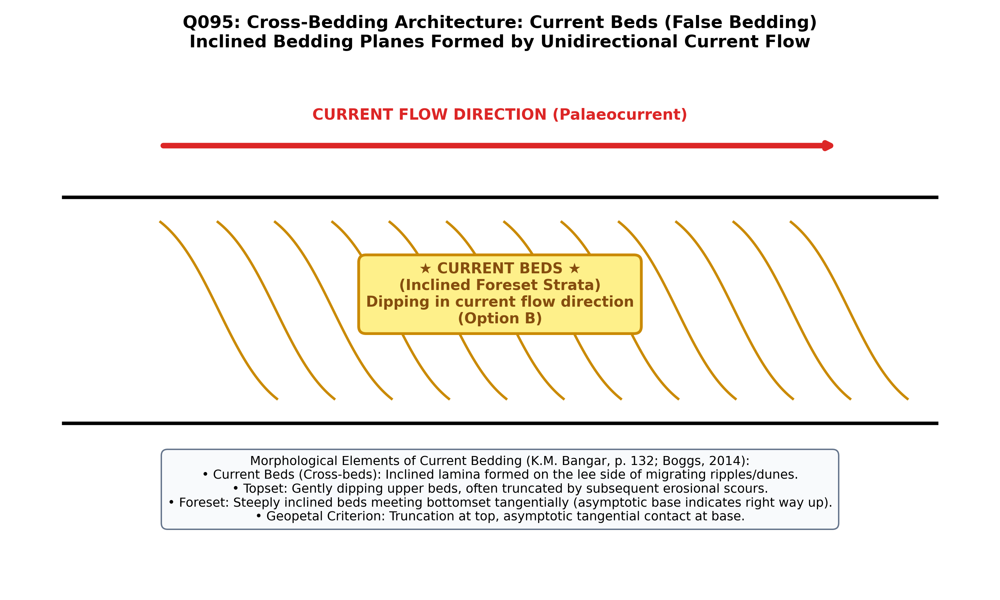
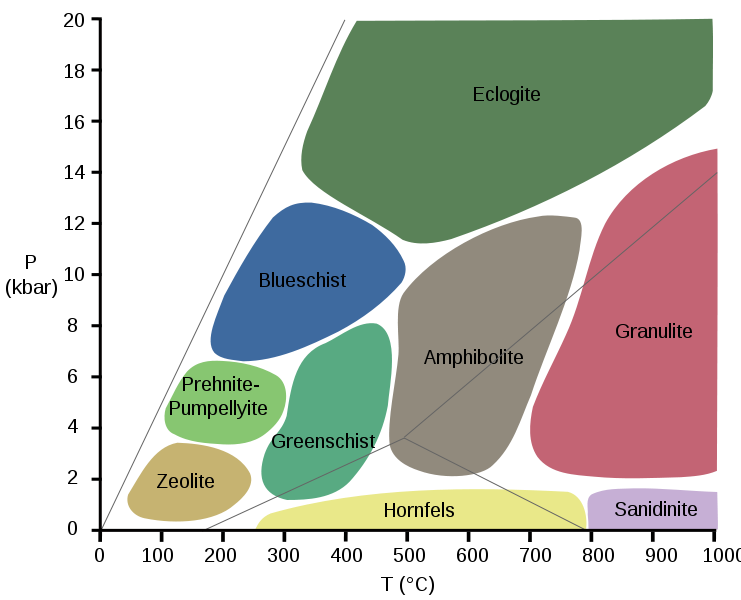
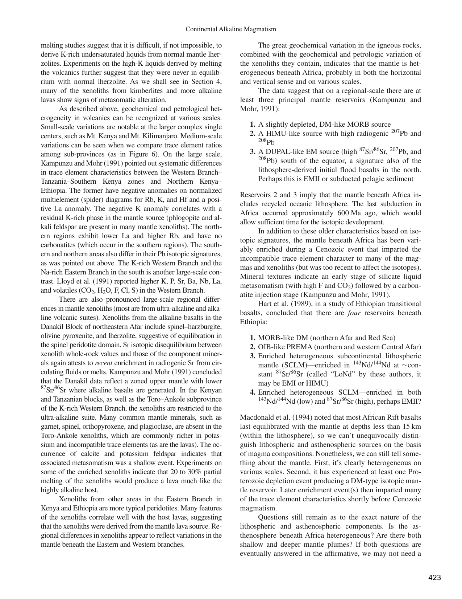
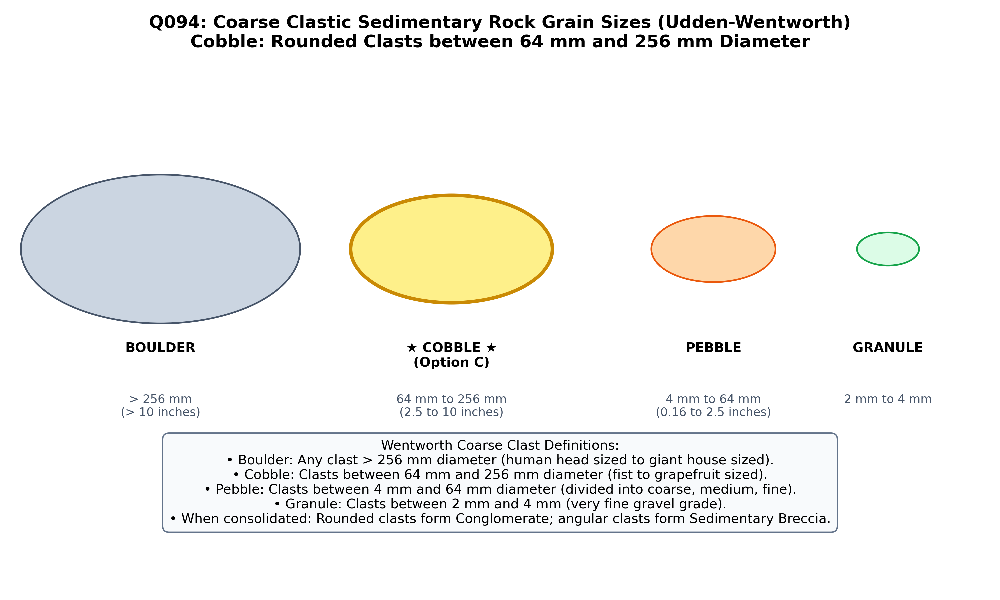
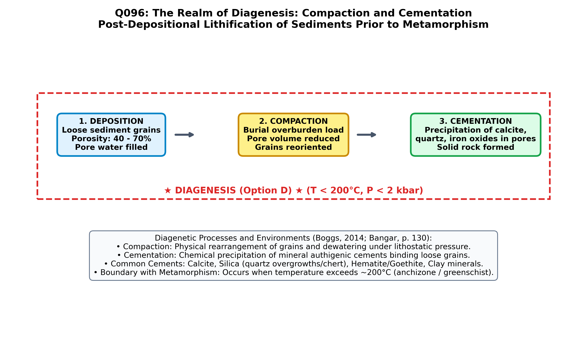
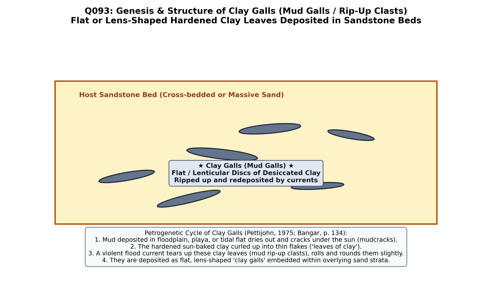
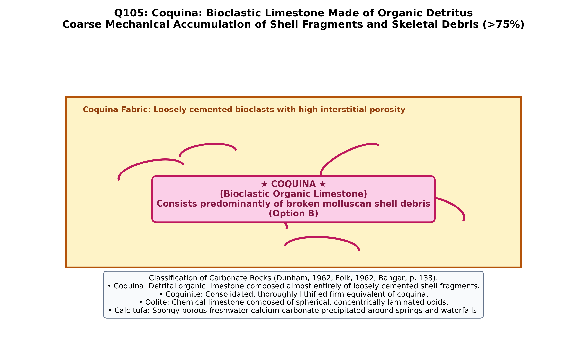
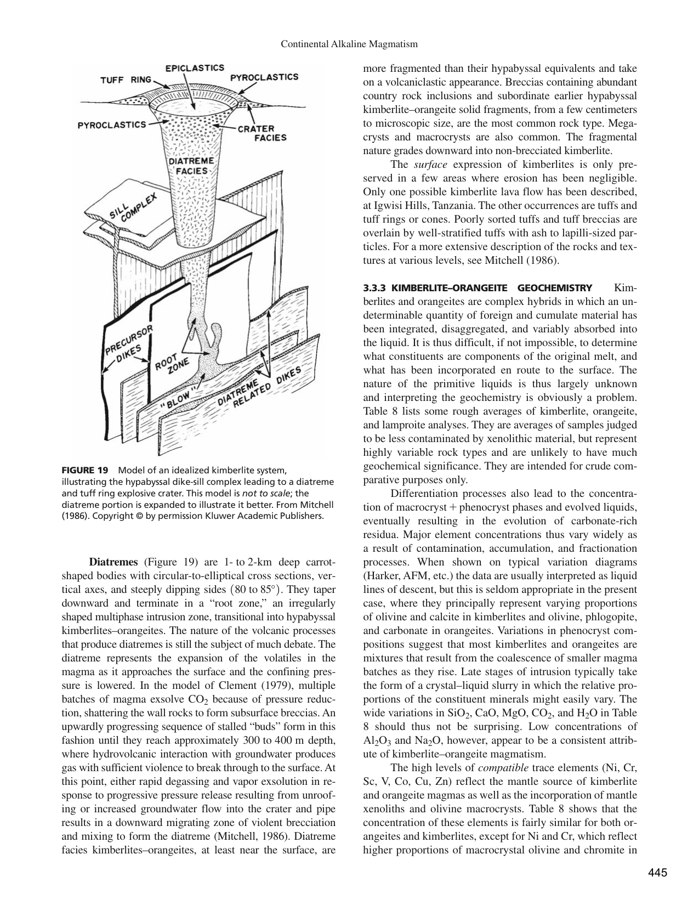
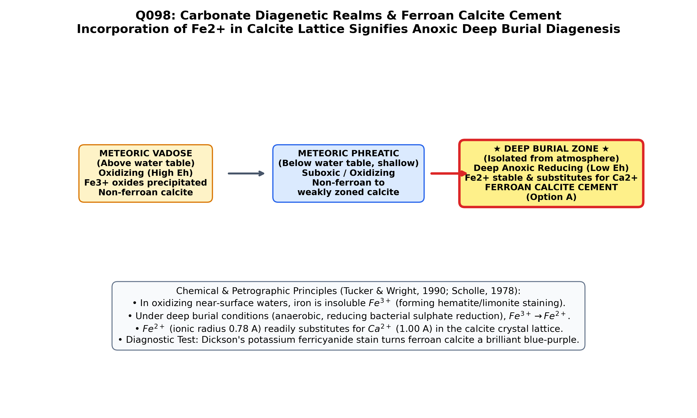

6.1 Origin, Texture, and Classification of Sedimentary Rocks
Sedimentary rocks form through the lithification of loose sediments deposited by surface agents (wind, water, ice) or through chemical precipitation and organic accumulation. They cover $\approx 75\%$ of the continental surface area.


Diagenesis and Lithification
The transformation of loose soft sediment into solid coherent rock occurs via:
- Compaction: Expulsion of pore water and reduction of pore volume under overburden pressure.
- Cementation: Precipitation of mineral cements ($\mathrm{SiO_2}$ as quartz/chalcedony, $\mathrm{CaCO_3}$ as calcite, $\mathrm{Fe_2O_3}$ as hematite) into pore spaces, binding loose sand grains together.
- Recrystallization & Authigenesis: Growth of new stable mineral phases during burial diagenesis.
Classification of Sedimentary Rocks
- Clastic (Mechanically Formed) Rocks: Composed of broken detrital fragments of pre-existing rocks classified by grain size on the Udden-Wentworth Scale:
- Rudaceous (Gravel, $> 2 \text{ mm}$): Conglomerate (rounded pebbles cemented together) and Breccia (sharp angular fragments indicating minimal transport).
- Arenaceous (Sand, $1/16 \text{ mm to } 2 \text{ mm}$): Sandstones (Quartz arenite $>90\%$ quartz; Arkose $>25\%$ feldspar; Greywacke with matrix $>15\%$).
- Argillaceous (Mud/Clay, $< 1/16 \text{ mm}$): Siltstone, Mudstone, and Shale (laminated, fissile fine-grained clayey rock).
- Non-Clastic (Chemical and Organic) Rocks:
- Carbonate Rocks: Limestone ($\mathrm{CaCO_3}$), Dolomite ($\mathrm{CaMg(CO_3)_2}$), Chalk, Marl.
- Evaporites: Gypsum ($\mathrm{CaSO_4 \cdot 2H_2O}$), Anhydrite ($\mathrm{CaSO_4}$), Rock Salt / Halite ($\mathrm{NaCl}$).
- Siliceous & Carbonaceous Deposits: Chert, Flint, Diatomite, Coal, and Lignite.
6.2 Sedimentary Structures
- Stratification & Bedding: Planar layering parallel to the depositional surface; individual layers $>1 \text{ cm}$ are beds; layers $<1 \text{ cm}$ are laminae.
- Cross-Bedding (Current Bedding): Internal laminations inclined at an angle to the main regional bedding planes, formed by wind dunes or river point bars; top sets truncated, bottom sets asymptotic, indicating paleo-current direction and right-side-up beds.
- Graded Bedding: Systematic vertical grading from coarse pebbles at the base to fine silt/clay at the top within a single bed, characteristic of turbidity currents.
- Ripple Marks: Wave-like undulations on bedding planes. Asymmetric ripples indicate unidirectional river/wind flow; Symmetric ripples indicate oscillatory wave action in shallow water.
- Mud Cracks (Sun Cracks): Polygonal shrinkage fissures formed by desiccation of wet mud under subaerial exposure, tapering downward to a 'V' shape (useful top-and-bottom indicator).



6.3 Metamorphism: Agents, Types, and Facies
Metamorphism is the mineralogical, chemical, and structural reconstitution of solid pre-existing rocks (igneous or sedimentary protoliths) in response to physical and chemical conditions differing from those under which they originally formed, occurring below the zone of melting ($T \approx 150\text{--}800^\circ\text{C}$).


Agents of Metamorphism
- Temperature ($T$): Drives endothermic dehydration and decarbonation reactions, accelerates diffusion, and promotes recrystallization into coarser grains.
- Confining Pressure ($P_{\text{lithostatic}}$): Increases with depth ($P = \rho g h$), favouring dense, compact mineral structures (e.g., Kyanite over Andalusite).
- Directed Stress (Differential Stress): Tectonic compression inducing plastic deformation, mineral rotation, and preferred planar orientation of platy minerals, producing Foliation and Schistosity.
- Chemically Active Pore Fluids: Supercritical aqueous solutions ($\mathrm{H_2O, CO_2}$) that facilitate ion transport and metasomatic replacement.

Types of Metamorphism
- Thermal (Contact) Metamorphism: Driven by heat radiating from igneous intrusions at shallow depths. Produces non-foliated, fine-grained, interlocking metamorphic rocks called Hornfels in contact aureoles.
- Dynamic (Cataclastic) Metamorphism: Occurs along major fault zones where intense mechanical grinding and shear under high strain rates crush rocks into Fault Breccia, Fault Gouge, and Mylonite without significant heat.
- Regional (Dynamothermal) Metamorphism: Operates across extensive orogenic mountain belts under combined high temperatures and directed tectonic stresses. Progresses through index zones: Chlorite $\to$ Biotite $\to$ Garnet $\to$ Staurolite $\to$ Kyanite $\to$ Sillimanite (Barrow's Metamorphic Zones).
6.4 Petrographic Descriptions of Metamorphic Rocks
| Rock Type | Structure / Fabric | Protolith | Engineering Characteristics |
|---|---|---|---|
| Slate | Microcrystalline, perfect slaty cleavage independent of bedding. | Shale / Mudstone. | Splits easily along cleavage into thin roofing tiles; highly anisotropic; weak when loaded perpendicular to cleavage. |
| Schist | Coarse-grained, pronounced schistosity (foliation) dominated by parallel micas. | Shale, basalt, or greywacke. | Prone to sliding along schistosity planes; poor foundation and tunneling rock when foliation dips towards excavations. |
| Gneiss | Alternating light quartz-feldspar and dark biotite-hornblende compositional bands (gneissose structure). | Granite (Orthogneiss) or Arkose/Shale (Paragneiss). | High mechanical strength across foliation; durable civil engineering construction stone and bridge foundation material. |
| Quartzite | Granoblastic (sugary mosaic of interlocking recrystallized quartz grains). | Pure quartz sandstone. | Extremely hard ($H=7$), durable, resistant to weathering; high crushing strength; abrasive to tunneling bits. |
| Marble | Granoblastic texture of interlocking calcite or dolomite crystals. | Limestone or Dolomite. | Durable ornamental and building stone; vulnerable to acid rainfall and solution cavities under dam sites. |
6.5 Visual Atlas: Sedimentary Facies, Diagenesis & Metamorphic Fabrics
Detailed petrological diagrams illustrating clast rounding, diagenetic compaction, ripple marks, metamorphic textures, and regional vs. contact metamorphism.











